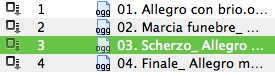
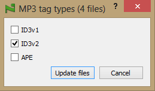

Save Files
To save all files in the current tab click or press ⌘S.
You can also save all tabs at once in the menu File → Save all tabs.
If you click on the icon in the leftmost column, all changes will be written in the file:

If you have selected only mp3 files, you can duplicate tags in the desirable formats. In the context menu choose Mp3 tag types... and a dialog appears:

Note: Files saving clears the undo stack.
You can also switch on the automatic files saving in the Qoobar Preferences dialog. If the option Save changes when closing Qoobar is on, all changes will be written when you close Qoobar.
To completely discard all changes, click the icon.
© 2009-2015 Alex Novichkov